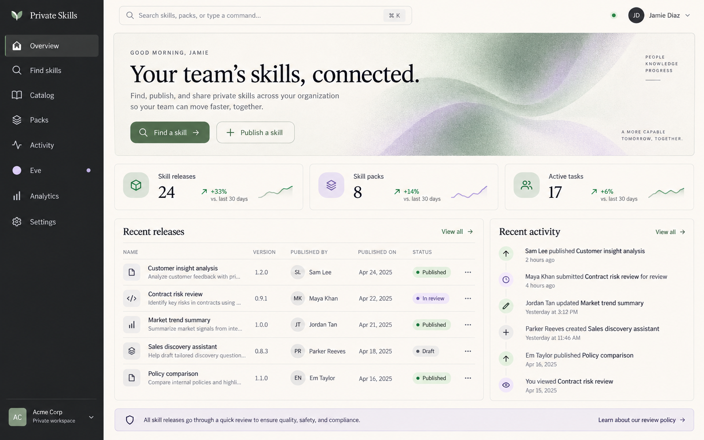
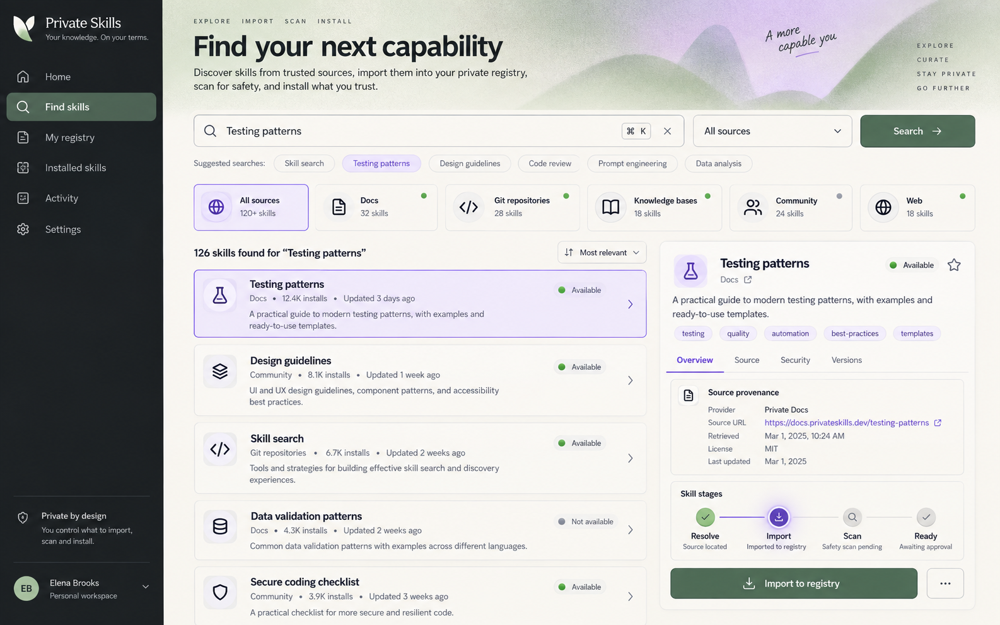
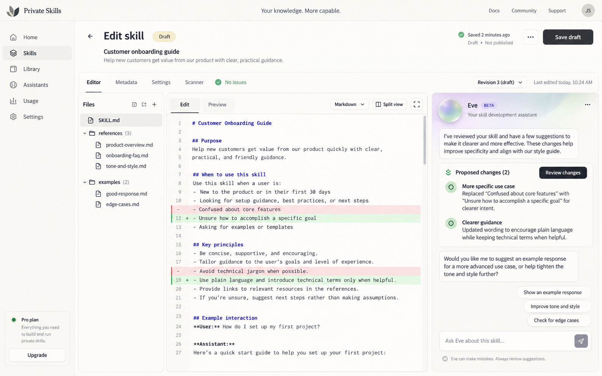
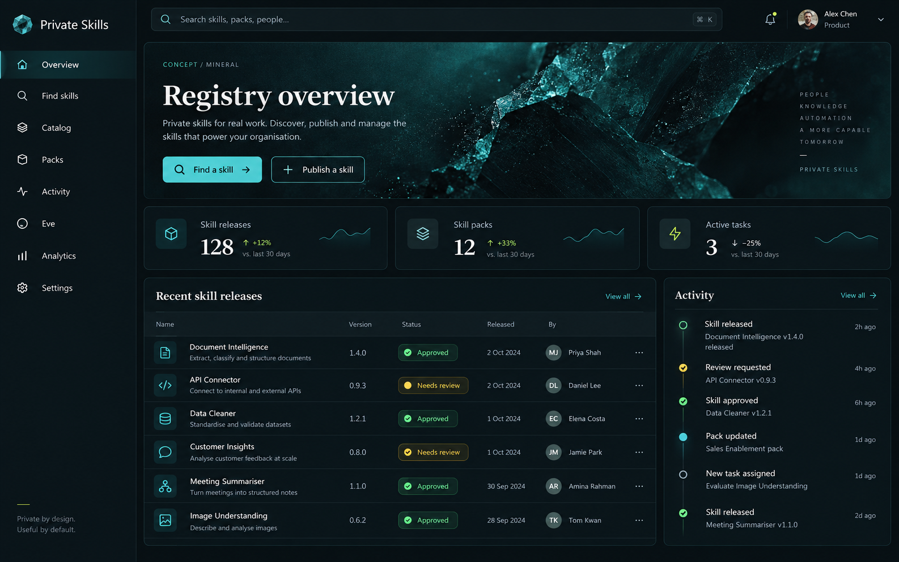
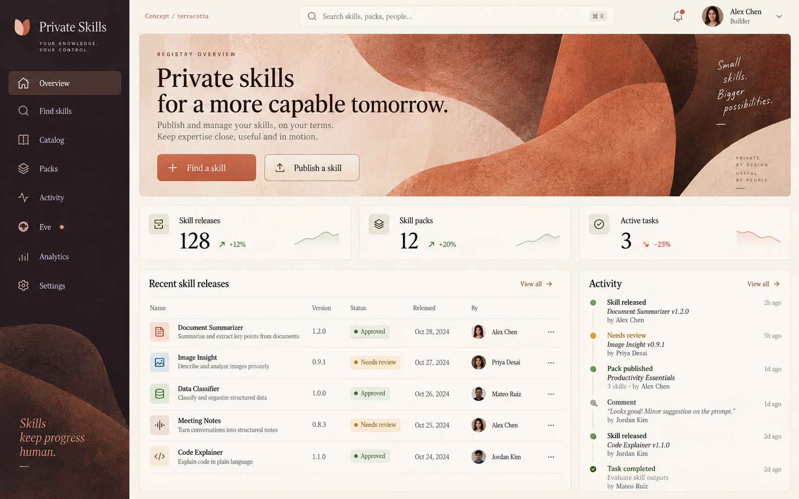
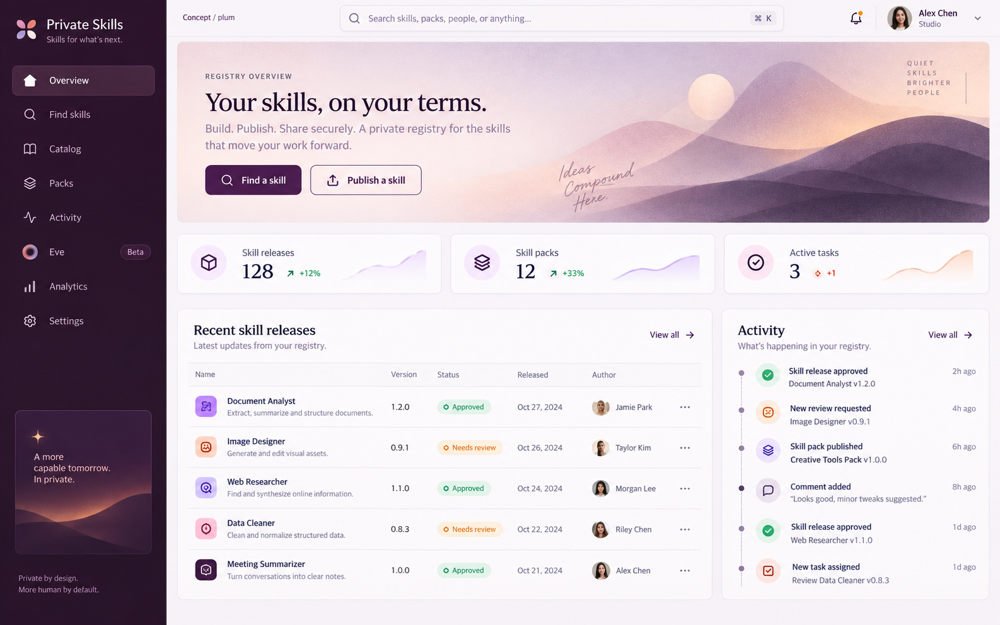
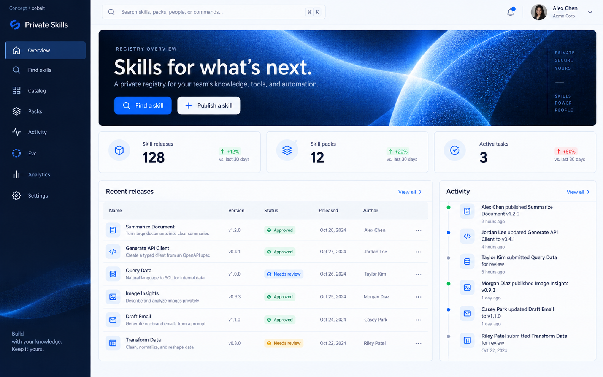

Private Skills / design lab
2026-09-14 · review build
Seven visual directions
Make the catalog feel like a place to work.
A small, self-contained gallery for comparing the baseline product surfaces with four color studies. The images are visual references, not implemented pages.
Every label, count, status, and skill name shown in these concepts is sample data. This gallery makes no API calls and is not a live product page.






Shortlist for review
Cobalt Studio is the provisional direction selected for follow-up implementation. Mineral, Terracotta, and Plum remain visible as alternatives, while the three baseline screens provide structural references. The gallery remains conceptual and contains no implemented product data.